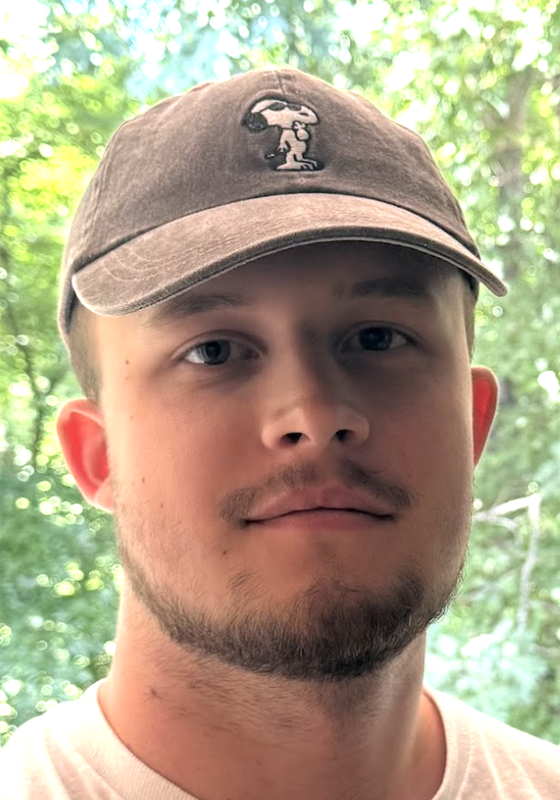

About
I'm interested in using computation to find patterns hidden inside noisy and messy real-world measurements.
Most of the projects I've worked on start with information that is difficult to interpret on its own, whether that is from spacecraft propellant chemistry, mass spectrometry in proteomics, or human movement analysis. I enjoy taking that data, figuring out the best way to analyze or organize it, and building models that can reveal something useful.
Lately, I've also been interested in AI agents, how they are being used in the real world, how they can help with data analytics, and what they could make possible in the future. I'm still learning more about the space, so feel free to message me on LinkedIn if you want to talk about it.
Outside of academics and research, I'm a huge fan of the outdoors and sports. I also enjoy participating in and organizing hackathons.